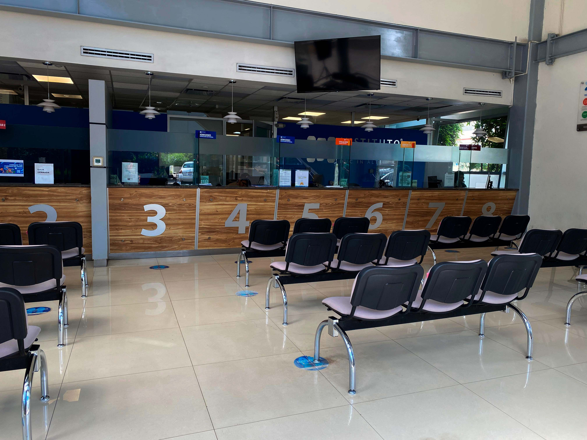
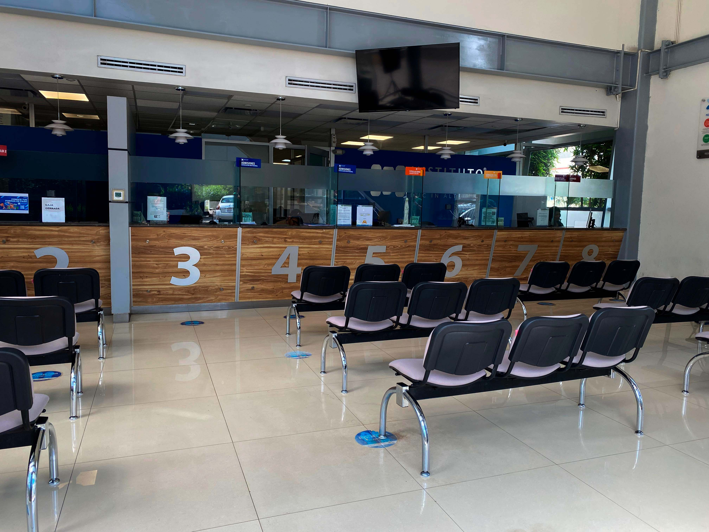

El Edificio Central es el primer punto de contacto para muchas y muchos estudiantes. Aquí se concentran diversas áreas que te acompañarán en tu proceso académico y administrativo desde tu ingreso hasta tu egreso.
¿Qué trámites puedes realizar aquí?
- Pagos de colegiaturas, documentos y actividades universitarias.
- Solicitud de constancias de estudio (con o sin calificaciones).
- Entrega de documentación para servicio social.
- Entrega de documentos para inscripción o reinscripción.
- Trámites relacionados con certificados e historial académico.
¿Dónde acudir?
Todos los trámites escolares se atienden en ventanilla. Por ejemplo, para solicitar una constancia:
- Acude a la ventanilla 6 y especifica el tipo de documento.
- Realiza el pago en caja.
- Entrega tu comprobante.
- Recibirás tu documento en un plazo de 24 a 48 horas, según la solicitud.
Áreas que puedes encontrar en el Edificio Central:
- Servicios Escolares
- Caja
- Departamento de Admisiones
- Servicio Social
- Finanzas
Recomendaciones para agilizar tus trámites:
- Guarda los números de WhatsApp de los departamentos que necesitas. Es el canal más rápido y te permite tener evidencia del seguimiento.
- Puedes solicitar estos números directamente en el edificio. También se comparten a través de redes sociales oficiales.
- Sé claro al explicar tu solicitud y lleva contigo los documentos necesarios.
Horarios de atención:
- Lunes a viernes, de 9:00 a.m. a 4:50 p.m.
Te recomendamos acudir con tiempo, ya que algunos procesos requieren validaciones o tiempos adicionales.
Canales oficiales de contacto:
Además de la atención presencial, puedes contactar al Edificio Central a través de:
Redes sociales institucionales (Instagram, TikTok, Facebook).
Números de WhatsApp de cada departamento (solicítalos directamente en ventanilla).